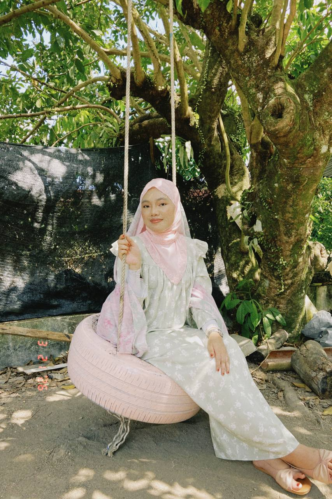

About Me

My name is Wan Amni Zahirah and I am a Computer Science student specializing in Graphic and Multimedia.
I enjoy designing websites, coding interactive applications, and learning modern web technologies.
My interests include web development, UI/UX design, animation, and creative multimedia projects.
I also enjoy crochet and digital creativity during my free time.